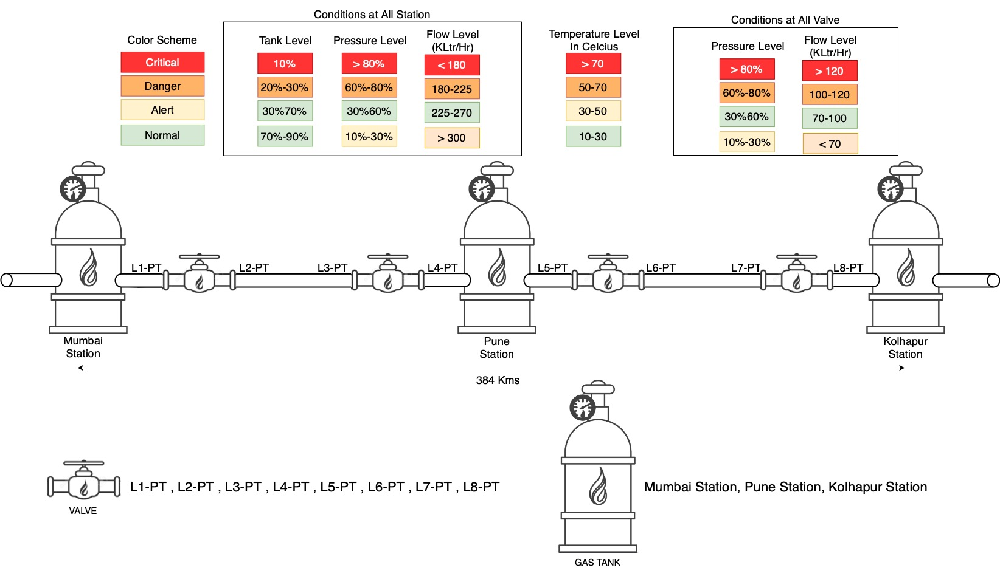

Documentation
Pipleline Design

Alarm categorization
- Alarms are categorized as -> System Alarms, Event Alarms, Alert Alarms and Critical Alarms
- System Alarms are generated for reminder and confirmation of component check
- Event Alarms are generated for confirmation of any action performed by component
- Alert and critical alarms are generated when the sensor readings are in yellow and red range boxes, respectively as shown above